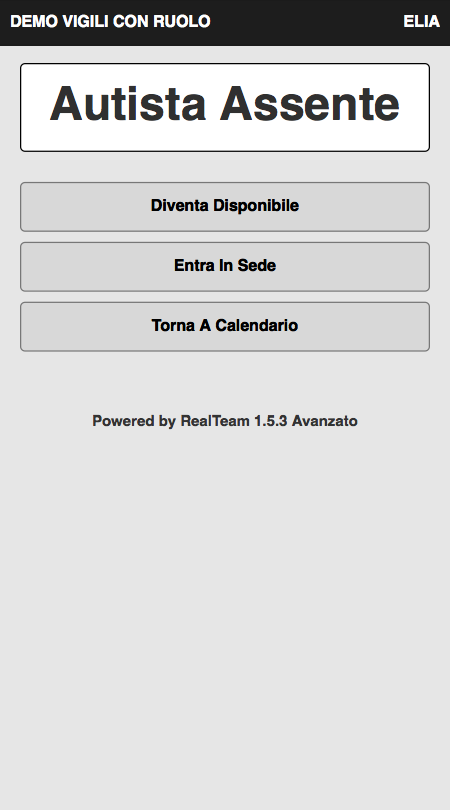

La piattaforma RealTeam e' stata concepita per aiutare le squadre di intervento a collaborare in modo piu' semplice, diretto ed efficace. Mentre la piattaforma supporta ogni tipo di processo collaborativo, il lavoro fatto con molti distaccamenti di vigili del fuoco volontari ci ha permesso di definire un processo collaborativo di riferimento specifico alle squadre di intervento. Questo processo puo' essere adottato sia per la collaborazione all'interno del distaccamento, che nell'interazione con la sala operativa.
Nel processo collaborativo di riferimento alcuni dei concetti fondamentali sono il ruolo dell'operatore, la pianificazione delle partenze, i turni predefiniti e la disponibilita' flessibile.
Operatori con ruolo
Nell'operativita' giornaliera, un operatore Fuori Turno sceglie il ruolo con cui rendersi disponibile, e.g. Capo Squadra, e mantiene questo ruolo durante tutto il ciclo di azioni del periodo di disponibilita’. Lo stesso operatore puo’ in seguito rendersi disponibile con un altro ruolo e partecipare a un altro ciclo di disponibilita’ in una funzione differente, e.g. Autista, come mostrano gli stati operativi dalla app Mobile.
Esempio di ciclo operativo di un caposquadra
Esempio di ciclo operativo di un autista
Pianificazione partenze
La gestione della disponibilita’ per ruolo si applica non solo agli stati operativi, ma anche alla pianificazione del calendario. Ogni volta che un operatore pianifica la disponibilita’ sceglie il ruolo collaborativo. Inoltre, la scelta del ruolo si rilfette anche nei conteggi della Caserma che quindi fornisce una informazione qualitativa oltre che quantitativa di disponibilita’.
Monitoraggio qualitativo delle risorse
La Dashboard fornisce un quadro della situazione delle risorse qualitativo, in cui e’ possibile valutare con precisione lo stato delle risorse piu’ critiche quali CapoSquadra e Autista. La figura seguente mostra come le risorse mantengano il ruolo prescelto a livello di stato predefinito (Vigile Di Turno), pianificato (Vigile Pianificato) e operativo (Vigile Disponibile).
Analisi e ottimizzazione
Con il processo collaborativo di riferimento, la vista per stato della Dashboard Analitica permette di vedere chiaramente come le risorse si raggruppano in base al loro ruolo per formare squadre dinamiche, per esempio le Partenze in un distaccamento di Vigili del Fuoco. La figura seguente mostra alcune cose interessanti per la settimana a partire dal 9 Giugno 2017:
1. la composizione di ogni squadra nei turni programmati giornalieri
2. la pianificazione delle risorse di supporto Paola ed Elia per il Venerdi
3. la mancanza di autisti per il Lunedi’
In base a questa analisi precisa e qualitativa della disponibilita’ il responsablie del gruppo di intervento puo’ intraprendere azioni per ottimizzare la situazione operativa del gruppo.
Ottimizzazione della selettiva
L’informazione qualitativa della disponibilita’ per ruolo diventa particolarmente importante nei centri di coordinamento, quali per esempio una sala operativa dei Vigili del Fuoco che deve decidere quale distaccamento e’ nella condizione ottimale per rispondere a una selettiva.
Nella figura, il distaccamento Luna, che ha adottato il processo collaborativo di riferimento con ruoli, comunica chiaramente alla sala operativa che e’ in corso un intervento, che un capo squadra e’ in sede ma manca l’autista e gli operatori sono pochi. Il distaccamento Marte, che non utilizza i ruoli nel processo collaborativo, e’ in una situazione normale ma la sala operativa non e’ in grado di valutare se risorse critiche quali CapoSquadra e Autista siano presenti. Risulta impossibile determinare il livello di prontezza del distaccamento senza ulteriore acquisizione di informazione con conseguente degrado del tempo di reazione alla chiamata.
Quando tutti i distaccamenti utilizzano il processo collaborativo di riferimento la gestione delle selettive dalla sala operativa risulta piu’ tempestiva ed efficace.